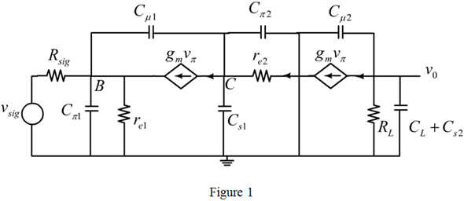
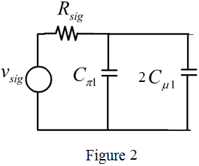

Step 1:
(a)
Refer to Figure 9.31 in the textbook for the BJT cascode amplifier.
The equivalent circuit of the BJT cascode amplifier is shown in Figure 1.

Step 2:
From the Figure 1, observe that the capacitance  forms a feedback capacitance connected between the base and collector terminals of the BJT
forms a feedback capacitance connected between the base and collector terminals of the BJT  . Apply the Miller’s approximation theorem to the capacitance
. Apply the Miller’s approximation theorem to the capacitance 
Consider the s domain representation of the capacitor  is,
is,
The total capacitance at the input node of  is,
is,
Here,
Substitute for  in the equivalent capacitance at the input.
in the equivalent capacitance at the input.
The inverse s domain representation of the impedance is . So, the resulting input equivalent circuit is shown in Figure 2.

Step 3:
From Figure 2, observe that the capacitance appears parallel to the capacitance
The input capacitance is,
The time constant due to the is,
The pole introduced in the input side is,

Therefore, the frequency is, .
Step 4:
The total capacitance in the output of is
Here,
Substitute  for in the equivalent capacitance at the output.
for in the equivalent capacitance at the output.
The total capacitance in the output of  is and resistance for time constant is
is and resistance for time constant is  .
.
The pole introduced in the output side is,
Therefore, the frequency is, .
Step 5:
(b)
(i)
Consider the source or signal resistance,
Write the expression for .
Substitute 1 mA for  , 25 mV for
, 25 mV for  , and 100 for
, and 100 for  , and
, and  for
for  .
.
Step 6:
Substitute 5 pF for and 5 pF for to calculate the input pole frequency.
Therefore the value of input pole frequency is, .
Step 7:
Substitute 0 pF for and 5 pF for and to calculate the output pole frequency.
Therefore the value of output pole frequency is, .
Step 8:
Now the frequency is,
Substitute the corresponding frequency values.
Therefore, the value of  for the amplifier is, .
for the amplifier is, .
Step 9:
(ii)
Consider the source or signal resistance,
Write the expression for  .
.
Substitute 1 mA for  , 25 mV for
, 25 mV for  , and 100 for
, and 100 for  , and
, and  for
for  .
.
Step 10:
Substitute 5 pF for  and 5 pF for to calculate the input pole frequency.
and 5 pF for to calculate the input pole frequency.
Therefore the value of input pole frequency is, .
Step 11:
Substitute 0 pF for and 5 pF for  and to calculate the output pole frequency.
and to calculate the output pole frequency.
Therefore the value of output pole frequency is, .
Now the frequency is,
Substitute the corresponding frequency values.
Therefore, the value of  for the amplifier is, .
for the amplifier is, .